教程：在 VS Code 中进行智能体编程
在本教程中，你将学习如何在 Visual Studio Code 中使用 AI 智能体进行构建。智能体可以规划解决方案、创建和编辑多个文件、运行命令并修复自身错误，所有这些操作都只需一个自然语言提示词即可完成。你只需描述你想要什么，智能体就会完成工作。
你将从智能体窗口开始，这是一个专为智能体优先工作流设计的专用界面。然后你将切换到聊天视图，在编辑器中工作时让智能体为你提供协助。在此过程中，你将掌握所需的 VS Code 基础知识，例如打开工作区、使用集成浏览器以及通过源代码管理提交更改。
你将使用 HTML、CSS 和 JavaScript 构建一个简单的个人作品集页面。该页面完全是静态的，因此你无需安装任何运行时或构建工具即可跟着操作。
熟悉 VS Code 的用户界面、编辑功能和主要效率工具。
前提条件
- 下载并安装 Visual Studio Code
- 在 VS Code 中启用 AI 功能
- 安装 Git
[!TIP]
如果你还没有 Copilot 订阅，可以注册 Copilot 免费计划免费使用 Copilot，并获得每月的内联建议和 AI 积分额度。
创建项目文件夹
智能体在文件夹（也称为工作区）的上下文中工作。你首先需要为项目创建一个文件夹。你暂时不需要在 VS Code 中打开该文件夹。在下一步中，你将在智能体窗口中打开它，这样你就可以在多个工作区之间工作，而无需为每个工作区打开单独的窗口。
- 在你的计算机上，创建一个名为
myportfolio的新文件夹。 - 将文件夹置于 Git 版本控制之下以跟踪更改。打开终端并运行以下命令：
cd myportfolio git init[!TIP]
你也可以从 VS Code 的源代码管理视图中初始化仓库。
使用智能体窗口构建功能
使用智能体窗口在 VS Code 中统一管理和监控跨项目的智能体会话。
智能体窗口（预览版）是 VS Code 中的一个专用窗口，经过优化，可让你在所有项目中使用智能体进行工作，而无需为每个项目打开一个单独的 VS Code 窗口。
在这一部分，你将在智能体窗口中打开你的文件夹，并让智能体来构建你的作品集页面。
打开智能体窗口
- 在 VS Code 中，选择标题栏中的在智能体中打开按钮。
你也可以从 VS Code 欢迎页面打开智能体窗口，或者从命令面板（kb(workbench.action.showCommands)）运行聊天：打开智能体窗口命令。
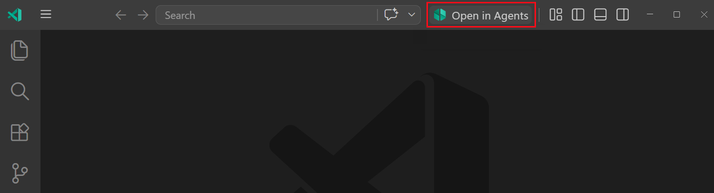
- 如果系统提示你登录，请选择一种登录方式并继续。
智能体窗口需要访问你的 GitHub Copilot 订阅才能运行智能体会话。如果你已经在 VS Code 中登录了 GitHub，那么在这里你也会自动登录。
启动智能体会话
- 选择左侧边栏顶部的新建以启动新会话。
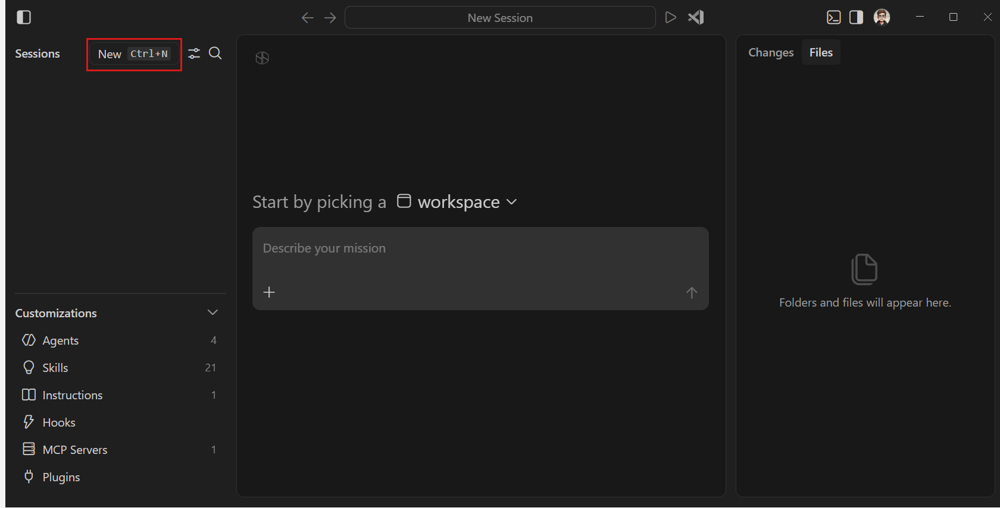
侧边栏显示你的活跃智能体会话列表，按工作区分组。你可以使用会话列表在不同的会话之间切换。在左下角，你可以配置自定义设置，以修改智能体的行为，使其符合你的编码习惯。
- 在工作区下拉菜单中，选择你电脑上的
myportfolio文件夹。
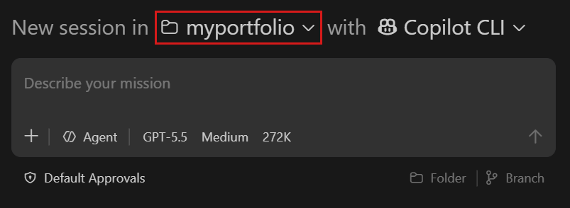
如果系统提示你信任该文件夹，请选择是，我信任作者。
[!IMPORTANT]
工作区信任让你可以决定是否可以执行项目文件夹中的代码。当你从互联网下载代码时，应首先检查它以确保其可以安全运行。获取有关工作区信任的更多信息。
- 确保选择了 Copilot CLI 智能体类型。这表示 Copilot CLI 将在你的本地计算机上运行智能体会话。
VS Code 会为你安装和配置 Copilot CLI，因此你无需进行任何额外设置。
- 保持其他默认配置选项：
- 智能体：用于执行任务的通用智能体。对于专门的任务，你可以创建自定义智能体，例如代码审查或测试智能体。
- 语言模型：根据你的设置，你可以从多个语言模型中进行选择并配置其他设置。
- 默认批准：智能体将自动批准安全操作，但对于可能存在风险的操作，会请求你的批准。
- 文件夹和分支：智能体直接对你文件夹中的文件进行操作，并提交到当前分支。
- 智能体：用于执行任务的通用智能体。对于专门的任务，你可以创建自定义智能体，例如代码审查或测试智能体。
kbstyle(Enter)：
Create a personal portfolio page with HTML, CSS, and JavaScript in separate files. Include a header with my name and a short bio, a section for projects with cards, and a contact section. Use modern styling and add some sample content.
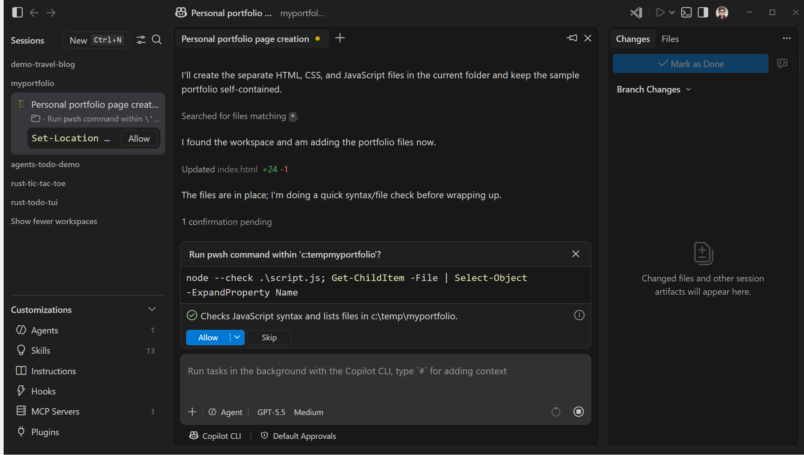
预览和迭代设计
智能体窗口非常适合这样的工作流：你将任务交给智能体，然后验证结果，而不是审查具体代码。对于基于 Web 的应用程序，你可以在集成浏览器中预览智能体的工作成果，而无需离开 VS Code。
要在集成浏览器中预览生成的作品集：
- 文件面板显示智能体创建的文件。右键单击
index.html文件，然后选择在集成浏览器中打开。
如果看不到在集成浏览器中打开的选项，请确保你位于文件面板中。
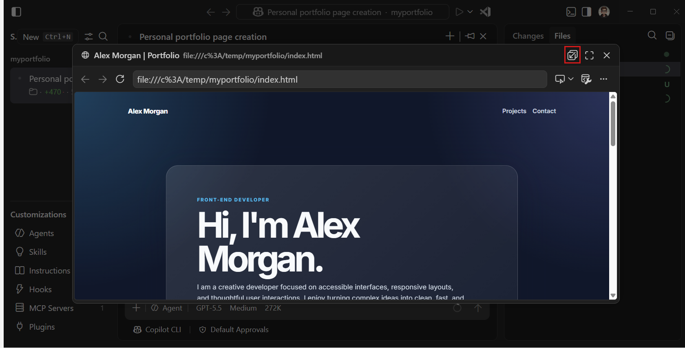
[!TIP]
选择模态窗口标题栏中的在编辑器区域中打开按钮，可以在聊天对话旁边查看浏览器。
- 让我们对页面进行设计更改。在集成浏览器中，选择将元素添加到聊天按钮进入选择模式。
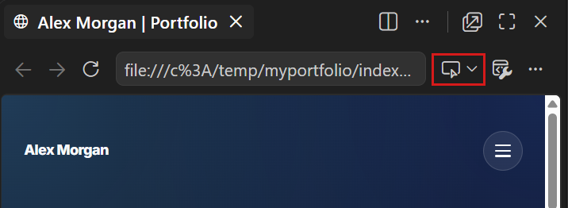
- 将鼠标悬停在页面上，选择你想要更改的元素，例如选择主标题。
智能体将选中的元素添加到你的提示词中作为上下文，包括其 HTML、CSS 和截图。
- 在聊天输入框中，输入描述你想要的更改的提示词，然后按
kbstyle(Enter)。例如：Use a gradient color for the text and use cursive. - 智能体对你选择的元素应用更改。在集成浏览器中刷新页面以查看更新。
集成浏览器让你无需切换上下文即可查看和迭代智能体的工作成果。
审查并提交更改
在提交智能体的工作成果之前，你可能想审查智能体应用的实际代码更改。更改面板列出了智能体在其会话期间创建或修改的每个文件。要审查和提交文件更改：
- 选择更改面板以查看智能体添加或修改的文件列表。每个项目还显示更改统计信息和添加/删除/更新指示符。
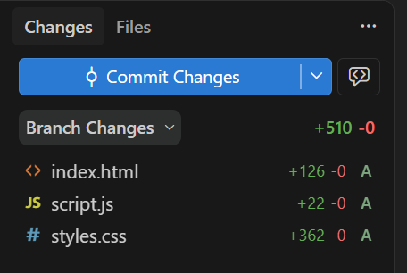
请注意，摘要更改统计信息也会显示在会话列表中。
- 选择一个文件以打开差异视图并审查智能体的编辑。你可以使用标题栏中的导航控件在不同文件之间移动。
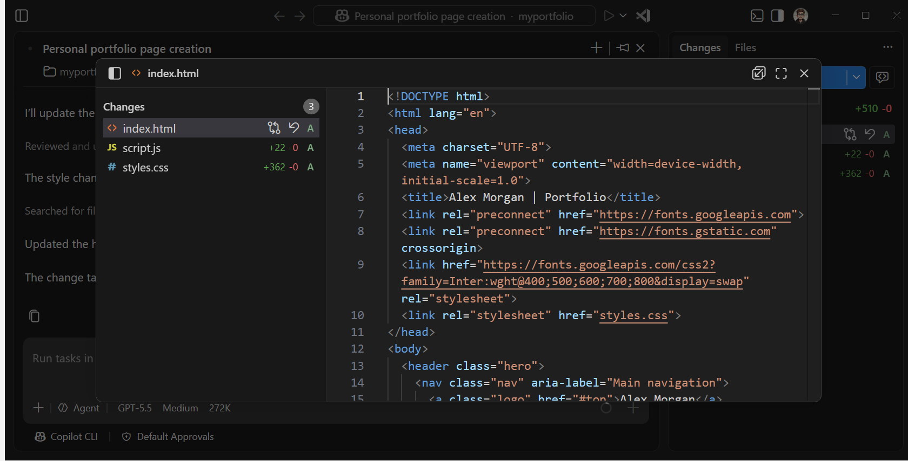
在这种情况下，所有文件都是新创建的，因此差异视图将所有行显示为新增行。对于修改过的文件，你将同时看到新增和删除。
[!TIP]
当你在差异视图中选择一段文本时，你可以向智能体提交关于该特定代码部分的内联反馈。
- 关闭差异视图，然后在更改面板中选择提交更改，将智能体的更改保存到你的 Git 仓库。
提交更改后，更改面板将恢复为空，因为没有待处理的更改。会话列表中的更改统计信息也会被清除。
在编辑器中使用智能体编写代码
在编辑器旁边使用聊天视图，让智能体协助你在活动工作区中完成编码任务。
对于某些更改，你可能更倾向于代码优先的方法，即你的重点是编写代码，而智能体在此过程中为你提供帮助。例如，你可能想添加一个主题切换器，并在过程中逐步调整样式。对于这种方法，你可以切换到编辑器并使用聊天视图。
打开工作区的编辑器
- 在智能体窗口中，选择标题栏中的在编辑器中打开按钮，以在编辑器中打开活动工作区。
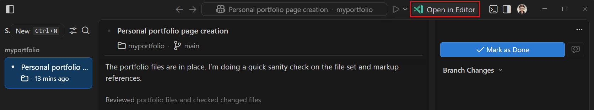
这将打开一个包含你的工作区的新 VS Code 窗口。聊天视图仍然在右侧边栏中打开，因此你可以在编辑器中工作的同时与智能体交互。
- 请注意，左侧边栏显示资源管理器视图，其中显示工作区中的文件。选择一个文件即可在主区域的编辑器选项卡中打开它。
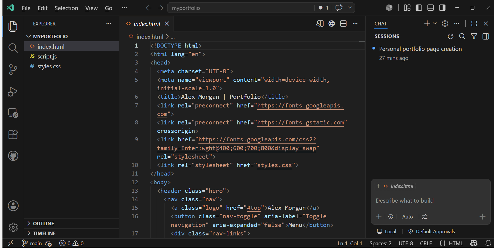
右侧边栏中的聊天视图显示你之前在智能体窗口中创建的正在进行的智能体会话。
从聊天视图启动新会话
聊天视图位于编辑器右侧边栏，与编辑器选项卡并排，经过优化可让智能体在你编写代码时为你提供协助。
在此步骤中，你启动一个新会话，运行智能体为你的作品集页面添加一个主题切换器。智能体将更改直接应用到你的文件中，你可以在编辑器中以内联差异的形式审查它们。
- 选择新建聊天（
+）以启动新会话。
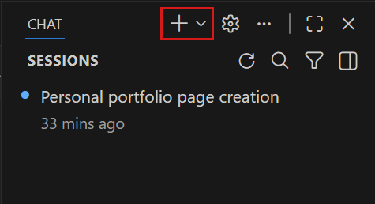
- 确保从会话目标下拉菜单中选择了本地，以便在编辑器上下文中运行智能体，并让其可以访问你的文件、工具和集成浏览器。
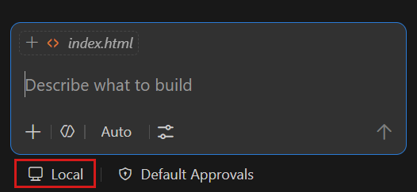
- 在聊天输入框中输入以下提示词，然后按
kbstyle(Enter)：Add a theme switcher button that toggles between a light and dark color theme for the page.
智能体将更改应用到你的文件中。你可以实时看到更改作为内联差异流入编辑器。
- 聊天视图显示已更改文件的列表。打开一个文件即可直接在编辑器中审查更改，你可以在其中使用叠加控件来保留或撤销各个编辑。
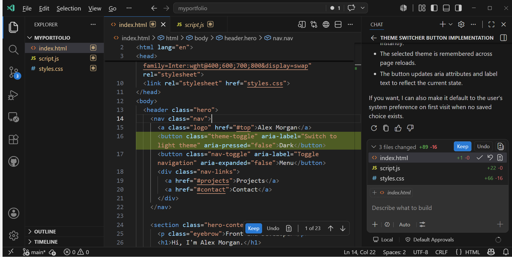
选择保留以接受更改。
- 选择
index.html文件，然后选择标题栏中的在集成浏览器中打开（地球图标）按钮，以在集成浏览器中预览带有新主题切换器的页面。 - 让智能体预览页面并在浏览器中自行验证新功能。这样，智能体可以根据其在浏览器中看到的内容对其更改进行迭代。输入以下提示词，然后按
kbstyle(Enter)：Verify that the theme switcher works correctly and review the design aligns with the rest of the page. If there are any issues, fix them.
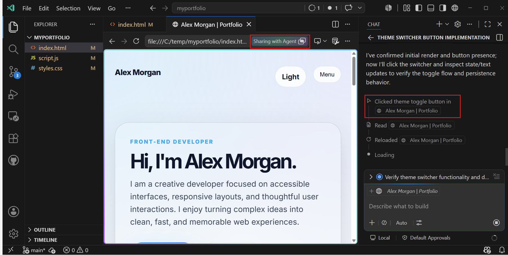
智能体会请求你批准打开集成浏览器。选择在此会话中允许，让智能体访问浏览器以预览和验证其更改。
恭喜！你使用 AI 智能体构建了一个作品集页面，同时使用了智能体优先和代码优先的方法。你使用了集成浏览器让智能体预览和验证其自身的更改。
后续步骤
要更深入地了解 Visual Studio Code 中的智能体编程，请获取有关以下内容的更多信息：